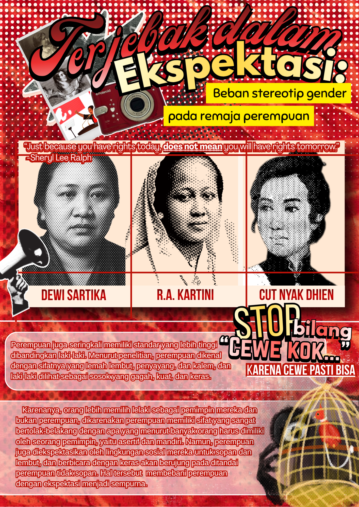

SDG 5: Kesetaraan Gender ⚖️
SDG 5 bertujuan mencapai kesetaraan gender dan memberdayakan semua perempuan serta anak perempuan. Kesetaraan gender berarti setiap orang memiliki hak, kesempatan, perlindungan, dan ruang untuk berpartisipasi tanpa dibatasi oleh stereotip atau diskriminasi berdasarkan gender.
Kesetaraan gender merupakan bagian penting dari pembangunan berkelanjutan karena kesempatan yang adil dalam pendidikan, pekerjaan, kesehatan, dan pengambilan keputusan dapat membantu masyarakat berkembang secara menyeluruh.

Permasalahan di Sekitarku
Ketidaksetaraan gender dapat ditemukan dalam kehidupan sehari-hari. Contohnya adalah anggapan bahwa pekerjaan tertentu hanya cocok dilakukan laki-laki atau perempuan, pembagian tugas rumah yang tidak seimbang, serta perbedaan kesempatan untuk menyampaikan pendapat dan menjadi pemimpin.
Di lingkungan pendidikan, semua murid seharusnya memperoleh kesempatan yang sama untuk belajar, mengikuti kegiatan, mengembangkan minat, dan mengambil peran. Candaan yang merendahkan, stereotip, atau perlakuan tidak adil dapat membatasi rasa percaya diri dan kesempatan seseorang.
Keterkaitan SDG 5 dengan Kerja Sama Antarnegara
Kesetaraan gender merupakan tantangan global sehingga penyelesaiannya membutuhkan kerja sama antarnegara. Negara dapat bertukar pengetahuan, menyusun program bersama, memperkuat perlindungan hukum, dan mendukung akses perempuan terhadap pendidikan serta kesempatan ekonomi.
Kerja sama bilateral
Dua negara bekerja sama melalui pertukaran pengalaman, pelatihan, beasiswa, atau program pemberdayaan perempuan.
Kerja sama regional dan multilateral
Negara-negara di kawasan atau berbagai belahan dunia menyepakati komitmen bersama melalui forum dan organisasi internasional, termasuk PBB dan ASEAN.
Indonesia dapat berperan dengan mendukung agenda kesetaraan gender dalam forum internasional, memperkuat kebijakan nasional, serta bekerja sama dalam program pendidikan, perlindungan, dan pemberdayaan perempuan.
Hubungan Pancasila dengan SDG 5
Nilai-nilai Pancasila mendukung tercapainya kesetaraan gender karena mengajarkan penghormatan terhadap martabat manusia, persatuan, musyawarah, dan keadilan sosial.
- Sila ke-2, Kemanusiaan yang Adil dan Beradab: setiap orang memiliki martabat dan hak yang harus dihormati tanpa diskriminasi.
- Sila ke-3, Persatuan Indonesia: seluruh masyarakat perlu bekerja sama dan saling menghargai tanpa membedakan gender.
- Sila ke-4, Kerakyatan yang Dipimpin oleh Hikmat Kebijaksanaan dalam Permusyawaratan/Perwakilan: setiap orang perlu mendapat kesempatan untuk menyampaikan pendapat dan terlibat dalam pengambilan keputusan.
- Sila ke-5, Keadilan Sosial bagi Seluruh Rakyat Indonesia: kesempatan dalam pendidikan, pekerjaan, dan kehidupan sosial harus diberikan secara adil.
STOP bilang "Cewe kok..."
Langkah Nyata untuk Mendukung SDG 5
Perubahan dapat dimulai dari tindakan sederhana. Kita dapat menggunakan bahasa yang menghargai semua orang, tidak membatasi cita-cita berdasarkan gender, membagi pekerjaan secara adil, serta berani menyampaikan pendapat ketika melihat perlakuan diskriminatif.
Di sekolah, murid dapat mendukung lingkungan yang aman dan setara dengan bekerja sama dalam kelompok, memberi kesempatan yang sama untuk memimpin, serta menghargai kemampuan dan pilihan setiap teman.